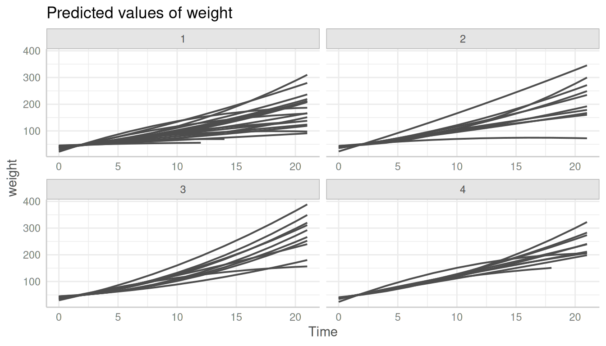

Case Study: Predictions for Mixed Models: Comparison of ggeffects and marginaleffects
Daniel Lüdecke
2024-01-24
Source:vignettes/practical_marginaleffects_pkg.Rmd
practical_marginaleffects_pkg.RmdThis vignette compares the ggeffects package with the marginaleffects package, which is another package that can be used to create predictions for mixed models. It shows how to reproduce the plots shown in the mixed models case study for population- and unit-level predictions
It is probably a good idea to read the introduction to predictions for mixed models first, to get familiar with the basics of the package regarding adjusted predictions for mixed models.
Population-level and unit-level predictions: comparison between marginaleffects and ggeffects
First, we fit the two example models.
library(lme4) # modelling
library(ggeffects) # predictions
library(marginaleffects) # predictions
library(ggplot2) # plotting
library(patchwork) # plot layout
data(ChickWeight)
model1 <- lmer(
weight ~ 1 + Time + (1 + Time | Chick),
data = ChickWeight
)
model2 <- lmer(
weight ~ 1 + Time + I(Time^2) + Diet + Time:Diet + I(Time^2):Diet +
(1 + Time + I(Time^2) | Chick),
data = ChickWeight
)Unit-level predictions
The first two plots show unit-level predictions created with the marginaleffects package. As can be seen, predictions for each level of the random effects are included.
pred1 <- predictions(model1,
newdata = datagrid(
Chick = ChickWeight$Chick,
Time = 0:21
)
)
p1 <- ggplot(pred1, aes(Time, estimate, level = Chick)) +
geom_line() +
labs(y = "Predicted weight", x = "Time", title = "Linear growth model")
pred2 <- predictions(model2,
newdata = datagrid(
Chick = ChickWeight$Chick,
Time = 0:21
)
)
p2 <- ggplot(pred2, aes(Time, estimate, level = Chick)) +
geom_line() +
labs(y = "Predicted weight", x = "Time", title = "Quadratic growth model")
p1 + p2ggeffects handles unit-level predictions slightly different (see this vignette) - each unit-level is considered as own “group”, thus the plot would normally use colors and a color legend to distinguish between the unit-levels. In this example, the default color palette is too small to plot all unit-levels.
pr <- ggpredict(model1, terms = c("Time", "Chick"), type = "random")
plot(pr)
#> Error in `palette()`:
#> Insufficient values in manual scale. 50 needed but only 9 provided.To reproduce the plots from the marginaleffects package, we need to modify our plot. We simply provide a vector with a sufficient amount of color values and hide the legend.
pr <- ggpredict(model1, terms = c("Time", "Chick"), type = "random")
p3 <- plot(pr, colors = rep("grey30", 50), show_ci = FALSE, show_legend = FALSE)
pr <- ggpredict(model2, terms = c("Time", "Chick"), type = "random")
p4 <- plot(pr, colors = rep("grey30", 50), show_ci = FALSE, show_legend = FALSE)
p3 + p4
Unit-level predictions stratified by Diet
This is the next plot shown in the marginaleffects case
study. Unit-level predictions are stratified by Diet.
pred <- predictions(model2)
ggplot(pred, aes(Time, estimate, level = Chick)) +
geom_line() +
ylab("Predicted Weight") +
facet_wrap(~Diet, labeller = label_both)ggeffects by default creates a (theoretical) reference grid
for all possible combinations in the data. That’s why the following plot
looks different than the one above. We see predictions for all
unit-levels in each panel of Diet.
pr <- ggpredict(model2, terms = c("Time", "Chick", "Diet"), type = "random")
plot(pr, colors = rep("grey30", 50), show_ci = FALSE, show_legend = FALSE)
To limit the plot to the unit-levels that are actually present in the
data, we need to set limit_range = TRUE.
pr <- ggpredict(model2, terms = c("Time", "Chick", "Diet"), type = "random")
plot(
pr,
colors = rep("grey30", 50),
show_ci = FALSE,
show_legend = FALSE,
limit_range = TRUE
)
Population-level predictions
The last example shows population-level predictions.
pred <- predictions(
model2,
newdata = datagrid(
Chick = NA,
Diet = 1:4,
Time = 0:21
),
re.form = NA
)
ggplot(pred, aes(x = Time, y = estimate, ymin = conf.low, ymax = conf.high)) +
geom_ribbon(alpha = 0.1, fill = "red") +
geom_line() +
facet_wrap(~Diet, labeller = label_both) +
labs(title = "Population-level trajectories")
This plot is rather simple to reproduce with ggeffects. We
don’t need to specify the type argument, since
type = "fixed" is the default and returns population-level
predictions.